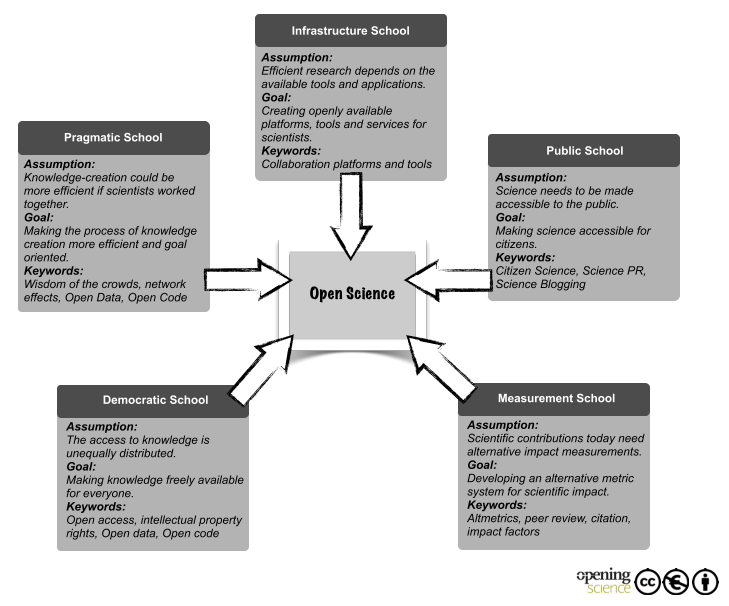

Introduction to Open Science¶
Learning Objectives
After this lesson, you should be able to:
- Explain what Open Science is
- Explain the components of Open Science
- Describe the behaviors of Open Science
- Explain why Open Science matters in education, research, and society
- Understand the advantages and the challenges to Open Science
- Identify who the practitioners of Open Science are
- Understand the underlying Ethos of Open Science
2023: the Year of Open Science¶
The White House, joined by 10 federal agencies, and a coalition of more than 85 universities, declared 2023 the Year of Open Science. As the year came to a close, the governement aimed to create a spotlight through The White House Office of Science & Technology Policy Open Science Recognition Challenge, recognizing open science stories that addressed current societial challenges (winners to be annouced).

What is Open Science?¶
If you ask a dozen researchers this question, you will probably get just as many answers.
This means that Open Science isn't necessarily a set of checkboxes you need to tick, but rather a holistic approach to doing science. In that spirit, it can also be useful to think about Open Science as a spectrum, from less to more open.
Definitions
"Open Science is defined as an inclusive construct that combines various movements and practices aiming to make multilingual scientific knowledge openly available, accessible and reusable for everyone, to increase scientific collaborations and sharing of information for the benefits of science and society, and to open the processes of scientific knowledge creation, evaluation and communication to societal actors beyond the traditional scientific community." - UNESCO Definition
"Open Science is the movement to make scientific research (including publications, data, physical samples, and software) and its dissemination accessible to all levels of society, amateur or professional..." Wikipedia definition
Open and Collaborative Science Network's Open Science Manifesto
Six Pillars of Open Science
Open Access Publications
Open Data
Open Educational Resources
Open Methodology
Open Peer Review
Open Source Software
Foster Open Science Diagram

Graphic by [Foster Open Science](https://www.fosteropenscience.eu/){target=_blank}
flowchart LR
id1([open science]) --> id3([publishing]) & id4([data]) & id5([open source software])
id3([publishing]) --> id41([access]) & id42([reviews]) & id43([methods]) & id44([educational resources])
id5([open source software]) --> id13([container registries]) & id10([services]) & id101([workflows]) & id12([version control systems])
id12([version control systems]) --> id101([workflows])
id13([container registries]) --> id101([workflows])
id14([public data registry]) --> id101([workflows])
id10([services]) --> id101([workflows])
id44([educational resources]) --> id21([university libraries])
id21([university libraries]) --> id101([workflows])
id22([federal data archives]) --> id101([workflows])
id4([data]) --> id21([university libraries]) & id22([federal data archives]) & id14([public data registries])
id101([workflows]) --> id15([on-premises]) & id16([commercial cloud]) & id17([public cloud])
Mermaid Diagram: Conceptual relationships of Open Science and cyberinfrastructure
 Awesome Lists of Open Science
Awesome Lists of Open Science
Awesome lists were started on GitHub by Sindre Sorhus and typically have a badge associated with them 
(There is even a Searchable Index of Awesome Lists)
We have created our own Awesome Open Science List here which may be valuable to you.
Open Access Publications¶

Definitions
"Open access is a publishing model for scholarly communication that makes research information available to readers at no cost, as opposed to the traditional subscription model in which readers have access to scholarly information by paying a subscription (usually via libraries)." -- OpenAccess.nl
New Open Access Mandates in US
The White House Office of Science and Technology (OSTP) has recently released a policy stating that tax-payer funded research must by open access by 2026.
Open Access Publishing
Major publishers have provided access points for publishing your work
Commonwealth Scientific and Industrial Research Organisation (CSIRO)
Financial Support for Open Access Publishing Fees
There are mechanisms for helping to pay for the additional costs of publishing research as open access:
Health InterNetwork Access to Research Initiative (HINARI)
Some institutions offer support for managing publishing costs (check to see if your institution has such support):
University of Arizona Open Access Investment Fund
Colorado University at Boulder Open Access Fund
Max Planck Digital Library - German authors can have OA fees in Springer Nature research journals paid for.
Bibsam Consortium - Swedish authors can have OA fees in Springer Nature research journals paid for.
Pre-print Services
ASAPbio Pre-Print Server List - ASAPbio is a scientist-driven non-profit promoting transparency and innovation comprehensive list of pre-print servers inthe field of life science communication.
ESSOar - Earth and Space Science Open Archive hosted by the American Geophysical Union.
Peer Community In (PCI) a free recommendation process of scientific preprints based on peer reviews
OSF.io Preprints are partnered with numerous projects under the "-rXivs"
The rXivs
arXiv - is a free distribution service and an open-access archive for 2,086,431 scholarly articles in the fields of physics, mathematics, computer science, quantitative biology, quantitative finance, statistics, electrical engineering and systems science, and economics.
BioRxiv - is an open access preprint repository for the biological sciences.
EarthArXiv - is an open access preprint repository for the Earth sciences.
EcsArXiv - a free preprint service for electrochemistry and solid state science and technology
EdArXiv - for the education research community
EngrXiv for the engineering community
EvoEcoRxiv - is an open acccess preprint repository for Evolutionary and Ecological sciences.
MediArXiv for Media, Film, & Communication Studies
MedRxiv - is an open access preprint repository for Medical sciences.
PaleorXiv - is an open access preprint repository for Paleo Sciences
PsyrXiv - is an open access preprint repository for Psychological sciences.
SocArXiv - is an open access preprint repository for Social sciences.
SportrXiv - is an open access preprint for Sports sciences.
ThesisCommons - open Theses
Open Data¶
Open Data are a critical aspect of open science. There are three key attributes of Open Data:
- Availability and accessibility
- Reusability
- Inclusivity
Definitions
“Open data and content can be freely used, modified, and shared by anyone for any purpose” - The Open Definition
"Open data is data that can be freely used, re-used and redistributed by anyone - subject only, at most, to the requirement to attribute and sharealike." - Open Data Handbook
DIKW Pyramid
Data are the basis of our understanding the natural world. The Data-Information-Knowledge-Wisdom (DIKW) pyramid describes for us how data are refined into information and knowledge.

FAIR & CARE Principles
FAIR Principles
In 2016, the FAIR Guiding Principles for scientific data management and stewardship were published in Scientific Data. Read it.
Findable
- F1. (meta)data are assigned a globally unique and persistent identifier
- F2. data are described with rich metadata (defined by R1 below)
- F3. metadata clearly and explicitly include the identifier of the data it describes
- F4. (meta)data are registered or indexed in a searchable resource
Accessible
- A1. (meta)data are retrievable by their identifier using a standardized communications protocol
- A1.1 the protocol is open, free, and universally implementable
- A1.2 the protocol allows for an authentication and authorization procedure, where necessary
- A2. metadata are accessible, even when the data are no longer available
Interoperable
- I1. (meta)data use a formal, accessible, shared, and broadly applicable language for knowledge representation.
- I2. (meta)data use vocabularies that follow FAIR principles
- I3. (meta)data include qualified references to other (meta)data
Reusable
- R1. meta(data) are richly described with a plurality of accurate and relevant attributes
- R1.1. (meta)data are released with a clear and accessible data usage license
- R1.2. (meta)data are associated with detailed provenance
- R1.3. (meta)data meet domain-relevant community standard
Open vs. Public vs. FAIR
FAIR does not demand that data be open: See one definition of open: http://opendefinition.org/
Why Principles?
FAIR is a collection of principles. Ultimately, different communities within different scientific disciplines must work to interpret and implement these principles. Because technologies change quickly, focusing on the desired end result allows FAIR to be applied to a variety of situations now and in the foreseeable future.
CARE Principles
The CARE Principles for Indigenous Data Governance were drafted at the International Data Week and Research Data Alliance Plenary co-hosted event "Indigenous Data Sovereignty Principles for the Governance of Indigenous Data Workshop," 8 November 2018, Gaborone, Botswana.
Collective Benefit
- C1. For inclusive development and innovation
- C2. For improved governance and citizen engagement
- C3. For equitable outcomes
Authority to Control
- A1. Recognizing rights and interests
- A2. Data for governance
- A3. Governance of data
Responsibility
- R1. For positive relationships
- R2. For expanding capability and capacity
- R3. For Indigenous languages and worldviews
Ethics
- E1. For minimizing harm and maximizing benefit
- E2. For justice
- E3. For future use
FAIR - TLC
Traceable, Licensed, and Connected
- The need for metrics: https://zenodo.org/record/203295#.XkrzTxNKjzI
How to get to FAIR?
This is a question that only you can answer, that is because it depends on (among other things)
- Your scientific discipline: Your datatypes and existing standards for what constitutes acceptable data management will vary.
- The extent to which your scientific community has implemented FAIR: Some disciplines have significant guidelines on FAIR, while others have not addressed the subject in any concerted way.
- Your level of technical skills: Some approaches to implementing FAIR may require technical skills you may not yet feel comfortable with.
While a lot is up to you, the first step is to evaluate how FAIR you think your data are:
Self FAIR assessment
Thinking about a dataset you work with, complete the ARDC FAIR assessment.
Resources
- The FAIR Guiding Principles for scientific data management and stewardship
- Wilkinson et al. (2016) established the guidelines to improve the Findability, Accessibility, Interoperability, and Reuse (FAIR) of digital assets for research.
- Go-FAIR website
- Carroll et al. (2020) established the CARE Principles for Indigenous Data Governance. full document
- Indigenous Data Sovereignty Networks
Connecting FOSS and CARE: Lydia Jennings
Lydia was a Data Science Fellow at the University of Arizona, attending FOSS in the Fall of 2022. Since then, Lydia graduated from the University of Arizona's Department of Evironemtal Sciences, and published a paper on the application of the CARE principles to ecology and biodiversity research. Go Lydia!
Check it out! Appying the 'CARE Principles for Indigenous Data Governance' to ecology and biodiversity, Nature Ecology & Evolution, 2023.
Linked Open Data Cloud
The Linked Open Data Cloud shows how data are linked to one another forming the basis of the semantic web .

Open Educational Resources¶

Definitions
"Open Educational Resources (OER) are learning, teaching and research materials in any format and medium that reside in the public domain or are under copyright that have been released under an open license, that permit no-cost access, re-use, re-purpose, adaptation and redistribution by others." - UNESCO
Digital Literacy Organizations
The Carpentries - teaches foundational coding and data science skills to researchers worldwide
EdX - Massively Online Online Courses (not all open) hosted through University of California Berkeley
EveryoneOn - mission is to unlock opportunity by connecting families in underserved communities to affordable internet service and computers, and delivering digital skills trainings
ConnectHomeUSA - is a movement to bridge the digital divide for HUD-assisted housing residents in the United States under the leadership of national nonprofit EveryoneOn
Global Digital Literacy Council - has dedicated more than 15 years of hard work to the creation and maintenance of worldwide standards in digital literacy
IndigiData - training and engaging tribal undergraduate and graduate students in informatics
National Digital Equity Center a 501c3 non-profit, is a nationally recognized organization with a mission to close the digital divide across the United States
National Digital Inclusion Allaince - advances digital equity by supporting community programs and equipping policymakers to act
Open Educational Resources Commons
Project Pythia is the education working group for Pangeo and is an educational resource for the entire geoscience community
Research Bazaar - is a worldwide festival promoting the digital literacy emerging at the centre of modern research
TechBoomers - is an education and discovery website that provides free tutorials of popular websites and Internet-based services in a manner that is accessible to older adults and other digital technology newcomers
Open Methodology¶

The use of version control systems like GitHub and GitLab present one of the foremost platforms for sharing open methods for digital research.
Definitions
"An open methodology is simply one which has been described in sufficient detail to allow other researchers to repeat the work and apply it elsewhere." - Watson (2015)
"Open Methodology refers to opening up methods that are used by researchers to achieve scientific results and making them publicly available." - Open Science Network Austria
Protocols and Bench Techniques
Gold Biotechnology Protocol list
JoVE - Journal of Visualized Experiments
Concept of Preregistration
In response to the Reproducibility Crisis, many researchers, particularly in fields like psychology, have begun to advocate for preregistration of studies.
This involves writing out and publishing your entire research plan, from data collection to analysis and publication, for the sake of avoiding practices like p-hacking or HARKing.
What preregistration also does is make the process of your work more open, including many of the small decisions and tweaks you make to a project that probably wouldn't make it into a manuscript.
To learn more about preregistration, you can check out the Open Science Foundation, a project that provides a preregistration platform and other Open Science tools. You can also read this publication
Open Peer Review¶

Pros and Cons of Open Peer Review
Definitions
Ross-Hellauer et al. (2017) ask What is Open Peer Review? and state that there is no single agreed upon definition
A manuscript review process that includes some combination of Open Identities, Open Reports, Open Participation, and even Open Interaction
Open Peer Review Resources
F1000Research the first open research publishing platform. Offering open peer review rapid publication
PREreview provides a space for open peer reviews, targeted toward early career researchers.
ASAPbio Accelerating Science and Publication in Biology, an open peer review source for biologists and life scientists.
PubPeer platform for post-publication of peer reviews.
Sciety platform for evaluating preprints.
Open Source Software¶

Definitions
"Open source software is code that is designed to be publicly accessible—anyone can see, modify, and distribute the code as they see fit. Open source software is developed in a decentralized and collaborative way, relying on peer review and community production." - Red Hat
Breakout Discussion 1¶
As you already know, being a scientist requires you to wear many hats, and trying to do Open Science is no different.

As we mentioned, Open Science is not a set of boxes you need to check off to be "Certified Open", but an intersecting set of philosophies and approaches, all of which occur on some type of spectrum.
To get a feel for how Open Science can be multifaceted and different for each researcher, we will do a short breakout group session to discuss what Open Science means to you.
What does Open Science mean to you?
Which of the pillars of Open Science is nearest to your own heart?
Open Access Publications
Open Data
Open Educational Resources
Open Methodology
Open Peer Review
Open Source Software
Are any of the pillars more important than the others?
Are there any pillars not identified that you think should be considered?
What characteristics might a paper, project, lab group require to qualify as doing Open Science
What are some limitations to you, your lab group, or your domain?
WHY do Open Science?¶
There are many reasons to do Open Science, and presumably one or more of them brought you to this workshop.
Whether you feel an ethical obligation, want to improve the quality of your work, or want to look better to funding agencies, many of the same approaches to Open Science apply.
A paper from Bartling & Friesike (2014) posits that there are 5 main schools of thought in Open Science, which represent 5 underlying motivations:
-
Democratic school: primarily concerned with making scholarly work freely available to everyone
-
Pragmatic school: primarily concerned with improving the quality of scholarly work by fostering collaboration and improving critiques
-
Infrastructure school: primarily focused on the platforms, tools, and services necessary to conduct efficient research, collaboration, and communication
-
Public school: primarily concerned with societal impact of scholarly work, focusing on engagement with broader public via citizen science, understandable scientific communication, and less formal communication
-
Measurement school: primarily concerned with the existing focus on journal publications as a means of measuring scholarly output, and focused on developing alternative measurements of scientific impact

While many researchers may be motivated by one or more of these aspects, we will not necessarily focus on any of them in particular. If anything, FOSS may be slightly more in the Infrastructure school, because we aim to give you the tools to do Open Science based on your own underlying motivations.
Breakout Discussion 2¶
Let's break out into groups again to discuss some of our motivations for doing Open Science.
What motivates you to do Open Science?
Do you feel that you fall into a particular "school"? If so, which one, and why?
Are there any motivating factors for doing Open Science that don't fit into this framework?
Ethos of Open Science¶
Doing Open Science requires us to understand the ethics of why working with data which do not belong to us is privileged.
We must also anticipate how these could be re-used in ways contrary to the interests of humanity.
Ensure the use of Institutional Review Boards (IRB) or your local ethical committee.
Areas to consider:

Source: UK Statistics Authority
- Geolocation (survey, land ownership, parcel data), see UK Statistics Authority Ethical Considerations
- Personal identification information US Personal Identifiable Information (PII), General Data Protection Regulation (GDPR)
- Health information US HIPAA , EU GDPR
- Protected and Endangered Species (US Endangered Species Act)
- Indigenous data sovereignty: CARE Principles for Indigenous Data Governance , Global Indigenous Data Alliance (GIDA), First Nations OCAP® (Ownership Control Access and Possession), Circumpolar Inuit Protocols for Equitable and Ethical Engagement
-
Artificial intelligence/machine learning Assessment List Trustworthy AI (ALTAI) from the European AI Alliance
For more information (training):
January in Tucson - intensive education session brings together distinguished faculty in the field of Indigenous governance and Indigenous rights, and gives them the opportunity to teach and hold discussions with Indigenous leaders, practitioners, and community members, and anyone interested in Indigenous affairs.
Ethics and Data Access (General Information with BioMedical and Life Sciences Data) includes a legal and ethical checklist lesson for researchers around "FAIR Plus".
Recommended Open Science Communities¶


Open Scholarship Grassroots Community Networks
International Open Science Networks
Center for Scientific Collaboration and Community Engagement (CSCCE)
US-based Open Science Networks
CI Compass - provides expertise and active support to cyberinfrastructure practitioners at USA NSF Major Facilities in order to accelerate the data lifecycle and ensure the integrity and effectiveness of the cyberinfrastructure upon which research and discovery depend.
Earth Science Information Partners (ESIP) Federation - is a 501©(3) nonprofit supported by NASA, NOAA, USGS and 130+ member organizations.
Internet2 - is a community providing cloud solutions, research support, and services tailored for Research and Education.
Minority Serving Cyberinfrastructure Consortium (MS-CC) envisions a transformational partnership to promote advanced cyberinfrastructure (CI) capabilities on the campuses of Historically Black Colleges and Universities (HBCUs), Hispanic-Serving Institutions (HSIs), Tribal Colleges and Universities (TCUs), and other Minority Serving Institutions (MSIs).
NASA Transform to Open Science (TOPS) - coordinates efforts designed to rapidly transform agencies, organizations, and communities for Earth Science
OpenScapes - is an approach for doing better science for future us
The Quilt - non-profit regional research and education networks collaborate to develop, deploy and operate advanced cyberinfrastructure that enables innovation in research and education.
Oceania Open Science Networks
New Zealand Open Research Network - New Zealand Open Research Network (NZORN) is a collection of researchers and research-associated workers in New Zealand.
Australia & New Zealand Open Research Network - ANZORN is a network of local networks distributed without Australia and New Zealand.
Self Assessment¶
True or False: All research papers published in the top journals, like Science and Nature, are always Open Access?
Answer
False
Major Research journals like Science and Nature have an "Open Access" option when a manuscript is accepted, but they charge an extra fee to the authors to make those papers Open Access.
These high page costs are exclusionary to the majority of global scientists who cannot afford to front these costs out of pocket.
This will soon change, at least in the United States. The Executive Branch of the federal government recently mandated that future federally funded research be made Open Access after 2026.
True or False: an article states all of the research data used in the experiments "are available upon request from the corresponding author(s)," meaning the data are "Open"
Answer
False
In order for research to be open, the data need to be freely available from a digital repository, like Data Dryad, Zenodo.org, or CyVerse.
Data that are 'available upon request' do not meet the FAIR data principles.
True or False: Online Universities and Data Science Boot Camps like UArizona Online, Coursera, Udemy, etc. promote digital literacy and are Open Educational Resources?
Answer
False
These examples are for-profit programs which teach data science and computer programming online. Some may be official through public or private universities and offer credits toward a degree or a certificate. Some of these programs are known to be predatory.
The organizations we have listed above are Open Educational Resources - they are free and available to anyone who wants to work with them asynchronously, virtually, or in person.
Using a version control system to host the analysis code and computational notebooks, and including these in your Methods section or Supplementary Materials, is an example of an Open Methodology?
Answer
Yes!
Using a VCS like GitHub or GitLab is a great step towards making your research more reproducible.
Ways to improve your open methology can include documentation of your physical bench work, and even video recordings and step-by-step guides for every part of your project.
You are asked to review a paper for an important journal in your field. The editor asks if you're willing to release your identity to the authors, thereby "signing" your review. Is this an example of "Open Peer Review"?
Answer
No
Just because you've given your name to the author(s) of the manuscript, this does not make your review open.
If the journal later publishes your review alongside the final manuscript, than you will have participated in an Open Review.
You read a paper where the author(s) wrote their own code and licensed as "Open Source" software for a specific set of scientific tasks which you want to replicate. When you visit their personal website, you find the GitHub repository does not exist (because its now private). You contact the authors asking for access, but they refuse to share it 'due to competing researchers who are seeking to steal their intellectual property". Is the software open source?
Answer
No
Just because an author states they have given their software a permissive software license, does not make the software open source.
Always make certain there is a LICENSE associated with any software you find on the internet.
In order for the software to be open, it must follow the Open Source Initiative definition